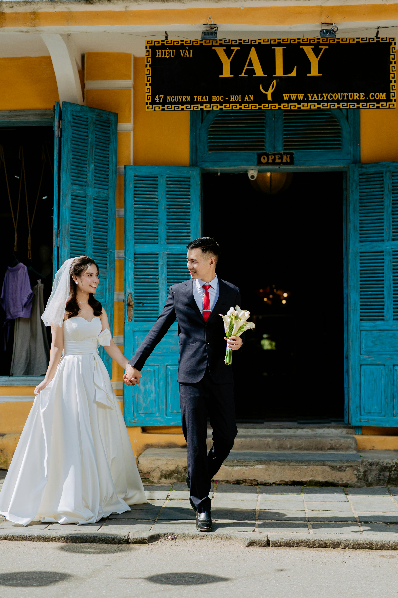
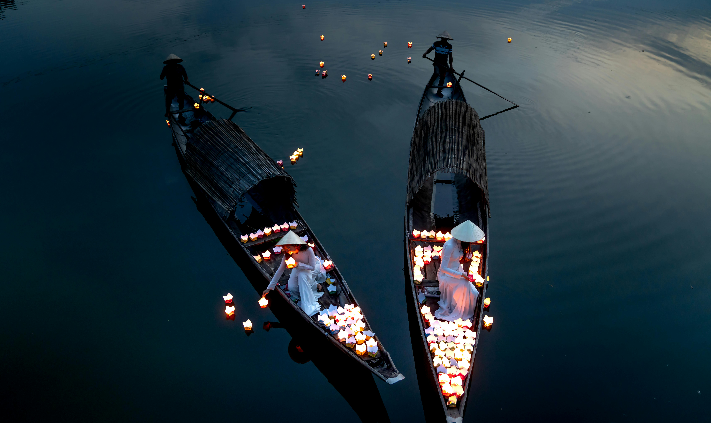

Traveling has always been an important part of my life. When I travel I want to see some of the iconic
tourist destinations, but the real draw for me is getting immersed into the culture around me.
There are some places in the world that don’t just impress you — they stay with you. For me, that place is
Hoi An, a small riverside town on Vietnam’s central coast that feels like it was designed to slow time down.
The moment you step into its lantern-lit streets, surrounded by centuries-old buildings, the aroma of fresh
herbs, and the hum of life along the Thu Bon River, you realize you’re somewhere truly special.
Hoi An isn’t just beautiful — it’s alive in a way few cities are. It’s a blend of history and modern
creativity, where ancient architecture meets artisan shops, vibrant markets, and world-class street food.
Whether you’re exploring its peaceful rice fields by bike, savoring a bowl of cao lầu noodles, or watching
lanterns float across the water at dusk, every moment feels effortless and memorable.
Shopping in Hoi An is more than just browsing — it’s an experience in creativity and craftsmanship. The
town has earned its reputation as Vietnam’s tailoring capital, where skilled artisans can transform
fabric and leather into perfectly fitted, custom-made pieces in just a day or two. From elegant suits
and flowing dresses to hand-stitched shoes and leather bags, Hoi An’s workshops blend traditional
techniques with modern style. Walking through the narrow streets, you’ll find rows of tailor shops and
leather studios, each buzzing with the sound of sewing machines and the energy of artisans bringing
ideas to life. Whether you come with a design in mind or let the experts guide you, having something
made here is not just shopping — it’s a personal souvenir of the city’s artistry and charm.
Favorite Tailors

Photo of a Couple Walking while Holding Hands by
Trần Long.
-
Yaly Couture: One of Hoi An’s most renowned tailor shops, known for its
high-quality craftsmanship, wide fabric selection, and professional service. Founded by local
designer Ms. Quynh, it has grown from a small stall into a full-scale bespoke tailoring house
employing hundreds of skilled artisans. Yaly specializes in custom clothing — from suits and dresses
to wedding gowns — offering multiple fittings and fine materials like silk, linen, and wool. While
prices are higher than at smaller shops, Yaly is trusted for its precision, consistency, and elegant
results, making it a top choice for tailor-made fashion in Hoi An. This is where I chose to have my
suits made for work.
-
BeBe Tailor: BeBe Tailor is a well-established custom clothing shop in Hoi An,
operating for over 15 years with three convenient locations around the Ancient Town. They offer a
wide and high-quality fabric selection and an all-in-house tailoring process with multiple fittings
to ensure excellent fit and finish. Their service emphasizes transparency (no hidden costs) and
customer care, and they’re particularly known for suits, dresses, and traditional Vietnamese Áo Dài.
-
Kimmy Tailor: Kimmy Tailor is a well-regarded bespoke shop in Hoi An with over 15
years of experience, run by Vietnamese-Canadian ownership and with a workshop in-house.They
emphasize high-quality fabrics (imported materials) and a tailoring process with multiple fittings,
offering a strong balance of craftsmanship and value. The customer service is frequently praised as
friendly and professional, and the pricing is positioned as competitive for the quality you receive.
To see my favorite tailor, check out Yaly Couture
Night Life
When night falls over the Thu Bon River, Hoi An undergoes a breathtaking transformation. The quiet,
easygoing rhythm of the day gives way to a lively, enchanting atmosphere as thousands of silk lanterns
illuminate every street, bridge, and doorway in the Ancient Town. The entire town seems to glow — soft
yellows, deep reds, and vibrant blues reflecting off the old walls and cobblestones, creating a scene
that feels almost dreamlike. As music drifts from riverside bars and laughter fills the air, people
gather to play street games, sip cocktails, and savor the aromas of sizzling skewers and fresh noodles
from food stalls. Boats carrying floating lanterns glide gently down the river, mirroring the lights
above, while the streets pulse with a warm, festive energy. Hoi An’s nightlife isn’t wild or
overwhelming — it’s alive in a way that feels both magical and deeply human, a nightly celebration of
light, food, and community.
Top Activities
-
Lantern Watching and Floating: You can explore the town admiring the thousands of
lanterns illuminating the streets and buildings. You can also release lanterns into the river while
making a wish. For a unique view, you can opt to hire a small boat to take you through the town at
night.
-
Riverside Bars and Live Music: The intimate settings let you enjoy music while
sipping cocktails or local beverages, all under the glow of lanterns.
-
Street Food Exploration: Wander from vendor to vendor as you sample an endless
array of grilled skewers, fresh seafood, sweet coconut desserts, and other Vietnamese favorites. My
favorite was the grilled calamari.
-
Night Markets: Amongst other options, the night market blends shopping and culture
through the town's unique offerings of handmade silk lanterns. We couldn't resist and have six of
them lighting our deck through the Spring and Summer.
-
Traditional Games and Cultural Performances: Participate in simple folk games or
watch local performances in the Old Town squares.

Women on Wooden Boats Putting Paper Lanterns on Water by
Quang Nguyen Vinh.
Outdoor Recreation
Hoi An and its surrounding countryside offer a rich mix of outdoor activities that blend adventure,
culture, and local life. For tourists, there’s biking through lush rice paddies, exploring quaint
villages, or taking a guided boat tour along the Thu Bon River to enjoy the scenery and spot traditional
fishing methods. Nearby beaches like An Bang and Cua Dai are perfect for swimming, sunbathing, or trying
water sports like stand-up paddleboarding. For a more cultural experience, visitors can visit Tra Que
Vegetable Village to help with planting or harvesting, learn traditional basket weaving in Cam Thanh
Coconut Village, or join a cooking class that begins with a market tour of local produce. There are also
day trips to the Marble Mountains or the My Son Sanctuary, offering hiking, history, and stunning views.
Top Recommendations

Person in Scooter in Front of Vegetables by
Hugo Heimendinger.
-
Hoi An Tropical Cooking Tour: This was a fantastic cultural experience! We not only
got to learn how to prepare and cook fried spring rolls, papaya salad, and our choice of a
traditional Vietnamese meal, but we also got to go to the market to get our ingredients and explore
the fishing village to observe how some of the protein is sourced daily. These dishes will be passed
down through generations in my family, truly bringing something back that is invaluable!
-
My Son Sanctuary: An ancient Cham archaeological site located in a lush valley in
central Vietnam. Once the spiritual and political center of the Champa Kingdom (4th–13th centuries),
it features over 70 red-brick temple towers dedicated mainly to the Hindu god Shiva. Despite damage
from natural decay and wartime bombings, the site remains a striking example of Cham architecture
and religious art, and it is recognized as a UNESCO World Heritage Site.
-
Marble Mountains: Marble Mountains is a cluster of five limestone and marble hills
near Da Nang and Hoi An, each named after one of the five elements. The site features caves,
Buddhist pagodas, Hindu shrines, and scenic viewpoints overlooking the coastline. At the base, the
Non Nuoc stone‑carving village showcases traditional marble craftsmanship, making it a popular
destination for both natural beauty and cultural heritage.
-
Tra Que Vegetable Village: See how the produce is planted and harvested for the
dishes you made throughout the cooking class! Doing this hands on is an experience like no other to
connect with the locals and get a glimpse into their life.
-
Biking Through Rice Paddies: This was not something we planned to do, but we are so
grateful that we did. Our hostel rented out bicycles for free, and we decided to ride and see where
it took us. We did not have a route or a plan. This ended up allowing us to escape the tourist traps
in ways that we never expected. We rode through small trails around and through the rice paddies
where we would come to unexpected sights, animals, or farming villages. Notably, our journey came to
a temporary pause when a water buffalo was blocking the trail.

Person Using Red Umbrella Standing On Rice Terraces by
Quang Nguyen Vinh.
To see my recommended cooking class, check out
Hoi An Tropical Cooking Tour
To learn more about the My Son Sanctuary, check out
UNESCO
To learn more about the Marble Mountains, check out
Danang Journey